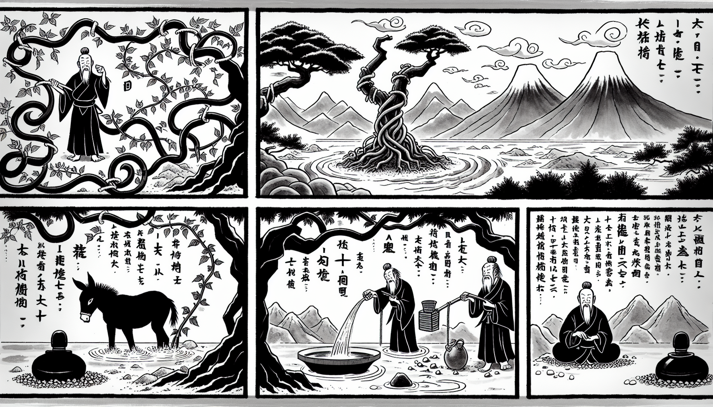

七十五巻 巻一覧
正法眼藏第74 王索仙陀婆
本ページは tools/gen_web_volumes.py が doc/正法眼蔵.txt から冒頭を抜粋して生成しています。図・詳細解説は今後の手編集で拡張できます。
出典（原文）: https://shomonji.or.jp/zazen/doc/genzou.html
この巻の位置づけ（学習メモ）
道元『正法眼蔵』七十五巻の第74篇「王索仙陀婆」です。禅籍・経典への引用や語の行間が重なりやすいので、一度ですべてを要約に還元しない読み方を推奨します。問答 Bot では巻スコープにこの題名を含めると応答が安定しやすいことがあります。
語彙の足場
- 題名語：巻題「王索仙陀婆」は、道元が本章で特に扱う論点の看板です。辞書義だけに固定せず、本文中の用例で意味を確かめます。
- 引用と典故：公案・経文の引用は、一字一句の照応（何に答えているか）を押さえると全体が見えやすくなります。
- 学び方：冒頭だけでも音読し、分からない箇所は印を付けて後から問うとよいです。
本文（冒頭・自動抜粋）
出典はリポジトリ内 doc/正法眼蔵.txt です。原文の参照元: https://shomonji.or.jp/zazen/doc/genzou.html
有句無句、如藤如樹。餧驢餧馬、透水透雲（有句も無句も、藤の如く樹の如し。驢に餧ひ馬に餧ふ、水を透り雲を透る）。
すでに恁麼なるゆゑに、
大般涅槃經中、世尊道、譬如大王告諸群臣仙陀婆來。仙陀婆者、一名四實。一者鹽、二者器、三者水、四者馬。如是四物、共同一名。有智之臣善知此名。若王洗時索仙陀婆、卽便奉水。若王食時索仙陀婆、卽便奉鹽。若王食已欲飮漿時索仙陀婆、卽便奉器。若王欲遊索仙陀婆、卽便奉馬。如是智臣、善解大王四種密語（大般涅槃經中に、世尊道はく、譬へば大王の、諸の群臣に仙陀婆來と告ぐるが如し。仙陀婆とは一名にして四實あり。一つには鹽、二つには器、三つには水、四つには馬なり。是の如くの四物、共同一名なり。有智の臣は善く此の名を知る。若し王、洗時に索仙陀婆せんには、卽便ち水を奉る。若し王、食時に索仙陀婆せんには、卽便ち鹽を奉る。若し王、食し已りて欲漿を飮まんとせん時索仙陀婆せんには、卽便ち器を奉る。若し王、遊ばんとして索仙陀婆せんには、卽便ち馬を奉る。是の如く智臣、善く大王の四種の密語を解するなり）。
この王索仙陀婆ならびに臣奉仙陀婆、きたれることひさし、法服とおなじくつたはれり。世尊すでにまぬかれず擧拈したまふゆゑに、兒孫しげく擧拈せり。疑著すらくは、世尊と同參しきたれるは仙陀婆を履踐とせり、世尊と不同參ならば、更買草鞋行脚、進一歩始得（更に草鞋を買ひて行脚して、一歩を進めて始得なるべし）。すでに佛祖屋裏の仙陀婆、ひそかに漏泄して大王家裏に仙陀婆あり。
大宋慶元府天童山宏智古佛上堂示衆云、擧、僧問趙州、王索仙陀婆時如何。趙州曲躬叉手（大宋慶元府天童山宏智古佛上堂の示衆に云く、擧す、僧趙州に問ふ、王索仙陀婆の時如何。趙州曲躬叉手す）。
雪竇拈云、索鹽奉馬（雪竇拈じて云く、鹽を索むるに馬を奉れり）。
師云、雪竇一百年前作家、趙州百二十歳古佛。趙州若是雪竇不是、雪竇若是趙州不是。且道、畢竟如何（雪竇は一百年前の作家、趙州は百二十歳の古佛なり。趙州若し是ならんには雪竇不是なり、雪竇若し是ならんには趙州不是なり。且く道ふべし、畢竟如何）。
天童不免下箇注脚。差之毫釐、失之千里。會也打草驚蛇、不會也燒錢引鬼。荒田不揀老倶胝、只今信手拈來底（天童免れず箇の注脚を下さん。之に差ふこと毫釐ならば、之を失ふこと千里。會するも草を打つて蛇を驚かす、不會なるも錢を燒きて鬼を引く。荒田揀ばず老倶胝、只今手に信せて拈じ來る底なり）。
先師古佛上堂のとき、よのつねにいはく、宏智古佛。
しかあるを、宏智古佛を古佛と相見せる、ひとり先師古佛のみなり。宏智のとき、徑山の大慧禪師宗杲といふあり、南嶽の遠孫なるべし。大宋一國の天下おもはく、大慧は宏智にひとしかるべし、あまりさへ宏智よりもその人なりとおもへり。このあやまりは、大宋國内の道俗、ともに疎學にして、道眼いまだあきらかならず、知人のあきらめなし、知己のちからなきによりてなり。
宏智のあぐるところ、眞箇の立志あり。
趙州古佛、曲躬叉手の道理を參學すべし。正當恁麼時、これ王索仙陀婆なりやいなや、臣奉仙陀婆なりやいなや。
雪竇の索鹽奉馬の宗旨を參學すべし。いはゆる索鹽奉馬、ともに王索仙陀婆なり、臣索仙陀婆なり。世尊索仙陀婆、迦葉破顔微笑なり。初祖索仙陀婆、四子、馬鹽水器を奉す。馬鹽水器のすなはち索仙陀婆なるとき、奉馬奉水する關棙子、學すべし。
南泉一日見鄧隱峰來、遂指淨缾曰、淨缾卽境、缾中有水、不得動著境、與老僧將水來（南泉一日、鄧隱峰の來るを見て、遂に淨缾を指して曰く、淨缾は卽ち境なり、缾中に水有り、境を動著することを得ず、老僧が與に水を將ち來るべし）。
峰遂將缾水、向南泉面前瀉（峰、遂に缾の水を將つて、南泉の面前に向つて瀉す）。
泉卽休（泉、卽ち休す）。
すでにこれ南泉索水、徹底海枯。隱峰奉器、缾漏傾湫（南泉水を索むる、底に徹し海枯る。隱峰器を奉る、缾漏れて湫を傾く）。しかもかくのごとくなりといへども、境中有水、水中有境を參學すべし。動水也未、動境也未。
香嚴襲燈大師、因僧問、如何是王索仙陀婆（如何ならんか是れ王索仙陀婆）。
嚴云、過遮邊來（遮邊を過ぎ來れ）。
僧過去（僧、過ぎ去く）。
嚴云、鈍置殺人。
しばらくとふ、香嚴道底の過遮邊來、これ索仙陀婆なりや、奉仙陀婆なりや。試請道看（試みに道ひ看んことを請ふ）。
ちなみに僧過遮邊去せる、香嚴の索底なりや、香嚴の奉底なりや、香嚴の本期なりや。もし本期にあらずは鈍置殺人といふべからず。もし本期ならば鈍置殺人なるべからず。香嚴一期の盡力道底なりといへども、いまだ喪身失命をまぬかれず。たとへばこれ敗軍之將さらに武勇をかたる。おほよそ説黄道黒、頂𩕳眼睛（黄と説き黒と道ふ、頂𩕳と眼睛と）、おのれづから仙陀婆の索奉、審審細細なり。拈拄杖、擧拂子、たれかしらざらんといひぬべし。しかあれども、膠柱調絃するともがらの分上にあらず。このともがら、膠柱調絃をしらざるがゆゑに、分上にあらざるなり。
世尊一日陞座、文殊白槌云、諦觀法王法、法王法如是（世尊一日陞座したまふに、文殊白槌して云く、諦觀法王法、法王法如是）。
世尊下座。
雪竇山明覺禪師重顯云、
列聖叢中作者知（列聖叢中、作者のみ知る）、
法王法令不如欺（法王法令欺の如くならず）。
衆中若有仙陀客（衆中若し仙陀の客有らんには）、
何必文殊下一槌（何ぞ必ずしも文殊一槌を下さん）。
しかあれば、雪竇道は、一槌もし渾身無孔ならんがごとくは、下了未下、ともに脱落無孔ならん。もしかくのごとくならんは、一槌すなはち仙陀婆なり。すでに恁麼人ならん、これ列聖一叢仙陀客なり。このゆゑに法王法如是なり。使得十二時、これ索仙陀婆なり。被十二時使、これ索仙陀婆なり。索拳頭、奉拳頭すべし。索拂子、奉拂子すべし。
しかあれども、いま大宋國の諸山にある長老と稱ずるともがら、仙陀婆すべて夢也未見在なり。苦哉苦哉、祖道陵夷なり。苦學おこたらざれ、佛祖命脈まさに嗣續すべし。たとへば、如何是佛（如何ならんか是れ佛）といふがごとき、卽心是佛と道取する、その宗旨いかん。これ仙陀婆にあらざらんや。卽心是佛といふはたれといふぞと、審細に參究すべし。たれかしらん、仙陀婆の築著磕著なることを。
正法眼藏第七十四
爾時寛元三年十月二十二日在越州大佛寺示衆
図解（4コマ・AI生成）
教義の根拠は本文・出典に従い、漫画は比喩の補助に留めてください。

深掘り（読解のコツ）
- 道元文は定義の羅列に見えても、多くの場合誤解への遮断と正伝の姿勢が背骨になっています。
- 「当体」「現成」「即」などの語が出たら、その巻独自の差別相にどう接続しているかをメモしておくとよいです。